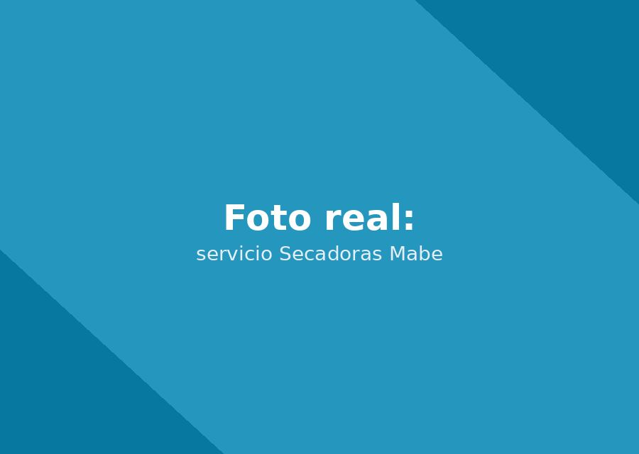

Servicio técnico Mabe Secadoras en Panamá: Reparamos, mantenemos e instalamos secadoras Mabe a domicilio en Ciudad de Panamá, con experiencia específica en modelos a gas y eléctricos.

Llame directamente o escriba por WhatsApp al mismo número para agendar su servicio técnico Mabe Secadoras en Panamá. Respondemos en minutos.
☏ Escribir por WhatsApp
Contamos con técnicos certificados en sistemas de secado por sensor de humedad y control de temperatura. Somos la opción confiable de servicio técnico Mabe Secadoras en Panamá para secadoras Mabe, con foco en el sistema de secado por sensor de humedad y el control de temperatura.
Así de fácil es agendar su servicio a domicilio.
Cuéntenos por WhatsApp o al +507 6933-7976 el tipo de equipo y la falla.
Confirmamos fecha y hora, con el tiempo estimado de llegada según su zona en Panamá.
El técnico revisa el equipo en su domicilio y le explica la falla antes de reparar.
Reparamos con repuestos originales Mabe y entregamos garantía escrita.
Un resumen rápido. Vea la guía completa con causas y diagnóstico detallado.
Falla común: No enciende la llama o no calienta.
Síntomas: Puede ser una falla en el sistema de ignición, la válvula de gas o el termostato de seguridad.
Falla común: El tambor gira pero no calienta.
Síntomas: La resistencia eléctrica suele estar dañada, o el termofusible de seguridad se activó por sobrecalentamiento.
Falla común: El ciclo se detiene antes de tiempo o la ropa queda demasiado seca.
Síntomas: El sensor de humedad puede estar sucio o dañado, dando lecturas incorrectas.
Si su secadoras Mabe presenta alguna de estas señales, es momento de agendar una revisión antes de que la falla se agrave.
Guía completa de diagnóstico: síntomas, causas y solución para cada falla frecuente.
Cuidados específicos para la tecnología sistemas de secado por sensor de humedad y control de temperatura y el clima de Panamá.
Instalación profesional con conexión de agua, nivelación y prueba de funcionamiento.
Motores, tarjetas electrónicas y empaques 100% genuinos, con garantía escrita.
Sin importar la línea o el modelo de su equipo Mabe, nuestros técnicos tienen experiencia específica en cada una.
Mayor eficiencia energética, requieren conexión de gas e instalación especializada.
Instalación más sencilla, ideales para apartamentos sin conexión de gas.
Detienen el ciclo automáticamente cuando la ropa alcanza el nivel de humedad ideal.
Un equipo Mabe bien mantenido puede durar entre 10 y 15 años en Panamá, siempre que se le haga limpieza y revisión de componentes con regularidad. El clima cálido y húmedo de la ciudad acelera el desgaste, por lo que el mantenimiento preventivo hace una diferencia real en la vida útil.
Como regla general: si su equipo tiene menos de 8 años y el costo de la reparación es razonable frente al valor de uno nuevo equivalente, reparar es casi siempre la opción más económica. Nuestro diagnóstico es honesto: si no vale la pena reparar, se lo decimos antes de cobrar cualquier trabajo.
Repuesto original Mabe para fallas de arranque o enfriamiento/lavado deficiente.
Reemplazo por daños de picos de voltaje, comunes en Panamá.
Para fallas de agua, fugas o dispensadores.
Evitan fugas y sobreesfuerzo del motor o compresor.
Si su secadoras Mabe dejó de funcionar correctamente, hace ruidos extraños o presenta fallas intermitentes, no está solo: es una de las consultas más frecuentes que recibimos en Ciudad de Panamá. El clima cálido y húmedo somete a los electrodomésticos a un desgaste mayor, y los equipos Mabe con sistemas de secado por sensor de humedad y control de temperatura no son la excepción. Esta guía resume lo que debe saber antes de agendar un servicio técnico Mabe en Panamá.
La tecnología sistemas de secado por sensor de humedad y control de temperatura de Mabe está diseñada para ser eficiente, pero también es sensible a instalaciones incorrectas, mantenimiento nulo o fluctuaciones de voltaje comunes en la red eléctrica local. Por eso recomendamos un servicio técnico con experiencia específica en secadoras Mabe, con foco en el sistema de secado por sensor de humedad y el control de temperatura. Un diagnóstico hecho por alguien sin experiencia específica en esta tecnología puede terminar cambiando piezas que no eran el problema real, y encareciendo la reparación innecesariamente.
Entre los motivos más comunes por los que nuestros clientes en Panamá solicitan un técnico Mabe para su secadoras están: Secadoras a gas (no enciende la llama o no calienta); Secadoras eléctricas (el tambor gira pero no calienta); Sistema de sensor de humedad (el ciclo se detiene antes de tiempo o la ropa queda demasiado seca). Si identifica alguno de estos síntomas, lo recomendable es desconectar el equipo solo si hay riesgo eléctrico visible (cables pelados, olor a quemado) y agendar una visita cuanto antes.
Un buen servicio técnico Mabe en Panamá debe ofrecerle tres cosas como mínimo: diagnóstico honesto antes de cobrar por repuestos, piezas 100% originales con garantía escrita, y técnicos que conozcan la tecnología específica de su equipo. Es exactamente lo que ofrecemos: revise las secciones de fallas comunes, mantenimiento preventivo e instalación de esta misma página para más detalle.
Por qué conviene un servicio con experiencia específica en secadoras Mabe.
Un técnico especializado en Mabe conoce a fondo sistemas de secado por sensor de humedad y control de temperatura, en vez de aplicar soluciones genéricas.
Evita el ensayo y error de cambiar piezas que no eran el problema real.
Un servicio especializado respalda su diagnóstico con garantía escrita, porque conoce las fallas típicas del equipo.
"Mi secadora a gas no encendía. La repararon el mismo día con garantía."
— Julio A. (El Cangrejo)"Instalaron mi secadora eléctrica nueva, incluido el ducto de ventilación."
— Marisol T. (Punta Pacífica)"Calibraron el sensor de humedad, ahora seca perfecto."
— Kevin R. (Bella Vista)Sí, tenemos experiencia específica en ambos tipos, incluyendo el sistema de ignición de las secadoras a gas.
En modelos eléctricos suele ser la resistencia dañada; en modelos a gas, la válvula o el sistema de ignición.
Sí, incluimos la instalación o revisión del ducto de ventilación al instalar su secadora.
Recomendamos un mantenimiento preventivo completo cada 10 a 12 meses, ajustando según el uso del equipo.
Reparamos todas las líneas de electrodomésticos Mabe en Ciudad de Panamá.
Servicio a domicilio en toda la ciudad.
Cuéntanos la falla de su equipo. Te confirmamos por WhatsApp en minutos.
☏ Escríbenos por WhatsApp